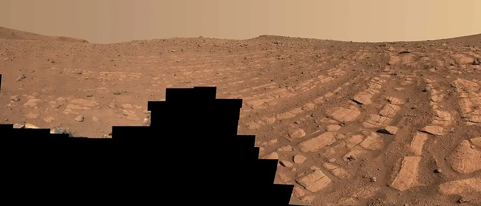
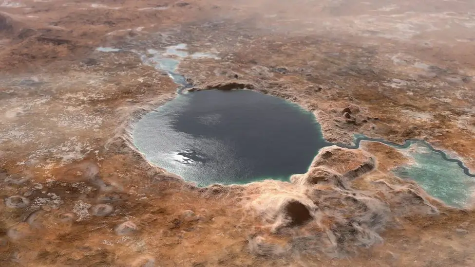
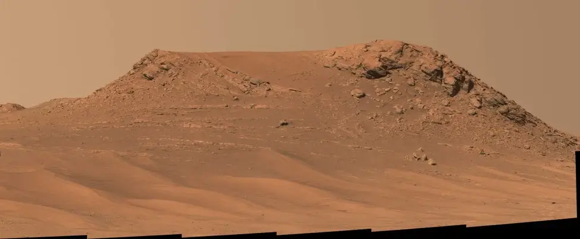

နာဆာရဲ့ Perseverance Rover အင်္ဂါဂြိုဟ် လေ့လာရေး သုတေသန ယာဉ်ကနေ အခု နောက်ဆုံး ပေးပို့လိုက်တဲ့ ဓါတ်ပုံတွေမှာ ယခင် တချိန်က ရေတွေ တသွင်သွင် စီးဆင်းနေ ခဲ့တဲ့ မြစ်ကြီး တစ်စင်းကို ရှာဖွေ တွေ့ရှိ ထားပါတယ်။ ဒီ မြစ်ကြီးဟာ ယခင် ယူဆထားခဲ့တာထက် ပိုမို နက်ရှိုင်းပြီး ပိုလဲ အရှိန်မြန်မြန် စီးဆင်းနေ ခဲ့တယ် ဆိုတဲ့ လက္ခဏာ တွေလဲ တွေ့ရှိ ရပါတယ်။
အကယ်လို့ ဒီအချက်သာ မှန်ကန်ခဲ့မယ် ဆိုရင် ဒီ မြစ်ကြီးဟာ ယဇီရို ချိုင်းဝှမ်း (Jezero Crater) အတွင်းကို စီးဝင်တဲ့ မြစ်ချောင်းတွေ အနက်က ကြီးမားတဲ့ မြစ်ကြီး တစ်စင်း ဖြစ်လာမှာ ဖြစ်ပါတယ်။ ဒီ ယဇီရို ချိုင်းဝှမ်းကို အင်္ဂါဂြိုဟ် သုတေသန ယာဉ်ဟာ လေ့လာစူးစမ်း နေခဲ့တာ အခုဆို ၂ နှစ်ကျော် ကြာခဲ့ပြီ ဖြစ်ပါတယ်။

မြစ်ချောင်းတွေ စီးဆင်းတဲ့ ပုံစံနဲ့ အနည်ကျတဲ့ အနေအထားကို ကြည့်ပြီး ဘယ်နေရာမှာ အဏုဇီဝ သက်ရှိ ရုပ်ကြွင်းတွေ တူးဖော်ရမလဲ ဆိုတာကို ပညာရှင်တွေ ဆုံးဖြတ်နိုင် ကြမှာ ဖြစ်ပါတယ်။
အခုလို အဏုဇီဝ ရုပ်ကြွင်း ရှာဖွေဖို့ ရည်ရွယ်ချက်ဟာ Perseverance rover ရဲ့ အဓိက ရည်မှန်းချက် တစ်ခု ဖြစ်ပါတယ်။ လေ့လာရေး ယာဉ်ဟာ အင်္ဂါဂြိုဟ်ရဲ့ ဘူမိဗေဒ အထောက်အထား တွေနဲ့ ရာသီဥတု သမိုင်းကို လေ့လာစူးစမ်းမှုကနေ ရှေးက သက်ရှိတွေ ရှိခဲ့တဲ့ အထောက်အထားကို ရှာဖွေမှာ ဖြစ်ပါတယ်။
ယခုလက်ရှိ လေ့လာရေးယာဉ် စူးစမ်းနေတဲ့ ဒေသဟာ အမြင့်မီတာ ၂၅၀ ခန့်ရှိတဲ့ အနည်ကျ ကျောက်လွှာကြီးပဲ ဖြစ်ပါတယ်။ ဒီ အနည်ကျ ကျောက်လွှာကြီးရဲ့ ကျောက်သားအလွှာတွေဟာ လှိုင်းတွန့်တွေလို ကွေးကွေးလေးတွေ ဖြစ်နေတာကို တွေ့ကြရပါတယ်။
ဒါဟာ တချိန်က ဒီဒေသမှာ ရေတွေ စဉ်ဆက်မပြတ် ဖြတ်သန်း စီးဆင်းနေ ခဲ့တယ် ဆိုတဲ့ လက္ခဏာပဲ ဖြစ်ပါတယ်။

အခု ရရှိတဲ့ ဓါတ်ပုံဟာ လေ့လာရေး ယာဉ်က ရိုက်ကူးထားခဲ့တဲ့ ရာနဲ့ချီတဲ့ ဓါပုံတွေကို ဆက်စပ်ပြီး ရရှိလာခဲ့တဲ့ စုပေါင်းစပ်ပေါင်း ဓါတ်ပုံ ဖြစ်ပါတယ်။ ဒီ ဓါတ်ပုံမှာ အင်္ဂါဂြိုဟ်ရဲ့ မြေမျက်နှာ သွင်ပြင်တွေကို ထင်ထင်ရှားရှား လေ့လာခွင့် ရကြပါတယ်။ အထူးသဖြင့်
ဒီ မြေမျက်နှာ သွင်ပြင်ဟာ တချိန်က အဟုန်ပြင်းပြင်း စီးဆင်းခဲ့တဲ့ မြစ်ကြီးတစ်စင်းရဲ့ လက္ခဏာတွေလို့ နာဆာက ပညာရှင် တွေက ထောက်ပြ ကြပါတယ်။ ဒီပုံမှာ မြစ်ကြမ်းပြင်ပေါ် အနည်ကျ ခဲ့တဲ့ အမှုန်အမွှား တွေနဲ့ လုံးဝန်းတဲ့ ကျောက်စရစ်ခဲတွေကို အထင်အရှား မြင်ကြရပါတယ်။
ရေစီး ကြမ်းလေလေ ပိုမို ကြီးမားတဲ့ ကျောက်တုံးတွေကို မြစ်ရေက သယ်ဆောင်ရွှေ့လျား နိုင်လေလေပဲ ဖြစ်ပါတယ်။
ဒီလို ကွေးနေတဲ့ ကျောက်သားလွှာ တွေကို ပထမဆုံး သတိပြုမိ ခဲ့တာကတော့ အင်္ဂါဂြိုဟ်ပတ် ဂြိုဟ်တုတွေက ပေးပို့တဲ့ ဓါတ်ပုံမှာ စတင် သတိပြုမိ ခဲ့ကြတာ ဖြစ်ပါတယ်။ ဒါပေမယ့် ဒီလို အနီးကပ် မြင်တွေ့ရတာကတော့ ဒါဟာ ပထမဆုံး အကြိမ်ပဲ ဖြစ်ပါတယ်။
အခု မြင်တွေ့ရတဲ့ အထောက်အထား တွေအရ ဒီဒေသမှာ ယခင်က ရေစီးသန်တဲ့ မြစ်ကြီးတစင်း ဖြတ်သန်း စီးဆင်းခဲ့တယ် ဆိုတာက ငြင်းမရတဲ့ အချက် ဖြစ်ပါတယ်။ ဒါပေမယ့် ဒီမြစ်ရဲ့ စီးဆင်းရာ လမ်းကြောင်းနဲ့ အမျိုးအစား ကိုတော့ လက်ရှိမှာ ဖော်ထုတ်နိုင်ခြင်း မရှိ သေးပါဘူး။
နာဆာ က ပညာရှင် တွေကတော့ ဒီ မြေမျက်နှာ သွင်ပြင်တွေဟာ တဖြည်းဖြည်း လမ်းကြောင်း ရွှေ့ပြောင်း သွားတဲ့ မြစ်ကြောင့် ကျန်ရစ်ခဲ့တဲ့ မြေမျက်နှာ သွင်ပြင်တွေ ဖြစ်မယ်လို့ ယူဆ ကြပါတယ်။

နောက်ဓါတ်ပုံ တစ်ပုံမှာတော့ တောင်ကုန်း တစ်ခုရဲ့ နံရံမှာ ရေတိုက်စားရာက ဖြစ်ပေါ်လာတဲ့ အနည်ကျ ကျောက်လွှာတွေကို မြင်တွေ့ ကြရပါတယ်။ ဒါဟာလဲ မြစ်ကြီးတစ်စင်း ရှိခဲ့တဲ့ ခိုင်မာတဲ့ အထောက်အထား တစ်ရပ်ပဲ ဖြစ်ပါတယ်။
အခုလို အထောက်အထား သစ်တွေ ရှာဖွေ တွေ့ရှိမှုနဲ့ အတူ Perseverance Rover က တူးဖော်ပေးခဲ့တဲ့ ကျောက်သား နမူနာ တွေကို ကမ္ဘာကို ပြန်သယ်ဆောင်ပြီး ဓါတ်ခွဲစမ်းသပ်ဖို့ ကိုလဲ သိပ္ပံ ပညာရှင်တွေ အားသန် နေကြပါတယ်။ ဒါဟာ အင်္ဂါဂြိုဟ်ရဲ့ ကျောက်သား နမူနာကို ကမ္ဘာပေါ်မှာ ပထမဆုံး အကြိမ် ဓါတ်ခွဲစမ်းသပ်နိုင်မှာ ဖြစ်ပါတယ်။
အကယ်လို့သာ အင်္ဂါဂြိုဟ် ပေါ်မှာ အတိတ်က သက်ရှိတွေ ရှိခဲ့ရင် ဒီ ဓါတ်ခွဲစမ်းသပ်မှုကနေ အထောက်အထားတွေ ပေးနိုင်လိမ့်မယ်လို့ ပညာရှင် တွေက မျှော်လင့် ထားကြပါတယ်။
Ref: NASA Perseverance rover may have found signs of a powerful ancient river on Mars | Sky at Night Magazine